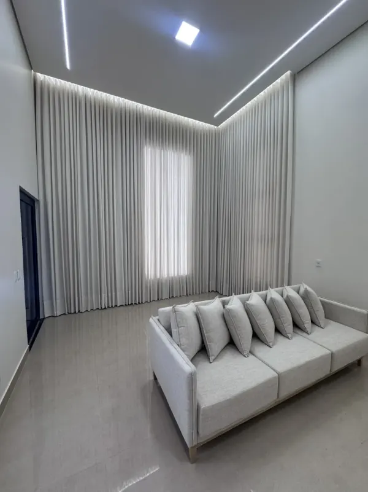
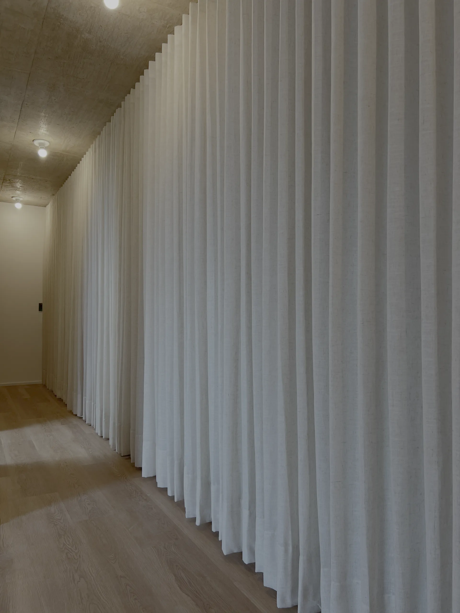
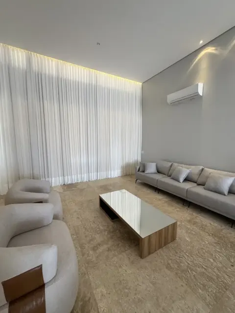
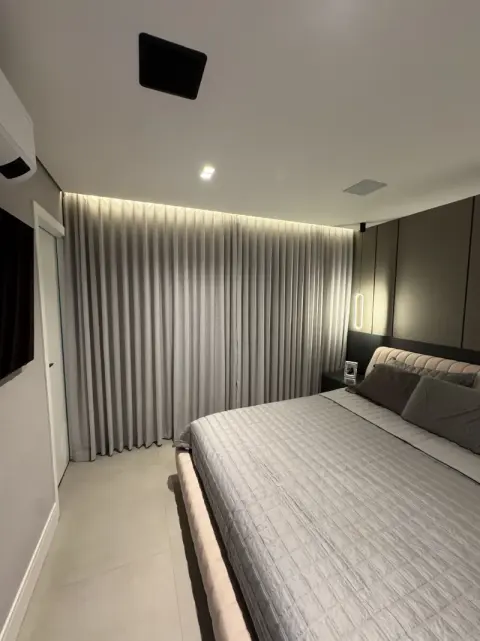
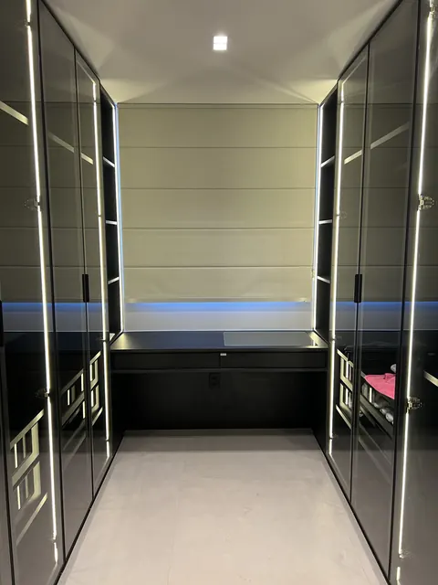
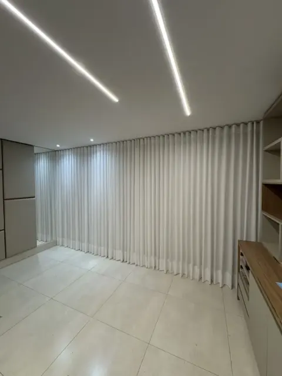

01 / SOB MEDIDA
↗Cortinas
Movimento, textura e acolhimento para vestir o ambiente.
Residências, escritórios, clínicas e outros ambientes. Criamos soluções sob medida para trazer conforto, privacidade e personalidade a cada espaço.


Detalhes que fazemDa textura ao controle da luz, ajudamos você a encontrar a escolha certa para o seu espaço.
Motorização sob medida com integração Alexa, Google Assistente, controle remoto e app. Luz e privacidade no comando da sua rotina.
Peça para abrir, fechar ou ajustar — sem levantar da cama ou do sofá.
Remoto e aplicativo para quem prefere o toque preciso no dia a dia.
Programe horários e cenas: manhã com luz suave, noite com mais privacidade.
Escolha o que importa para você. Nós ajudamos a transformar essa ideia em um projeto sob medida.
Cortinas de tecido criam uma luz delicada e deixam a sala mais acolhedora, sem perder a sensação de amplitude.
Conversar sobre essa ideiaUm olhar para ambientes transformados com cortinas e persianas da Casa Royal Decor.



Uma experiência pensada para tornar suas escolhas mais simples e o resultado mais seu.
Entendemos seu ambiente, suas preferências e o que você espera da luz e da privacidade.
Encontramos juntos os modelos, tecidos e acabamentos que fazem sentido para o projeto.
Do ajuste à instalação, cada detalhe importa para um resultado que combina com você.
Estou muito satisfeita com a Casa Royal Decor em Brasília. Desde o atendimento até a entrega, tudo foi impecável.
Conte o que você imagina para o seu ambiente. A Casa Royal Decor ajuda você a encontrar a solução certa.
Iniciar conversa no WhatsApp Atendimento pelo WhatsApp: (61) 98152-6151